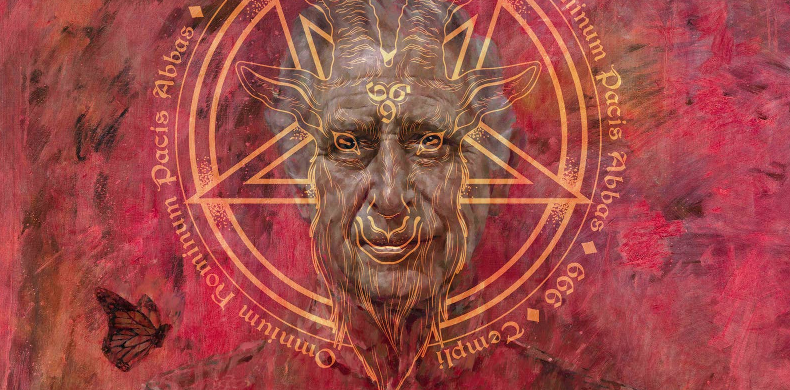

PRINCESS DIANA CAME BACK FROM THE DEAD?
ONLY TO BE MURDERED AGAIN, HOURS LATER.


In a development that has left both scientists and spiritualists scratching their heads,
Princess Diana was reportedly brought back from the dead this weekend,
only to be tragically murdered again mere hours later.
However, the miracle was short-lived. Before Diana could even update her passport, disaster struck. Reports confirm that she was murdered again in circumstances described as “both shocking and inconvenient”.
Theories about who or what was behind the second tragedy immediately began to whirl. Some blamed shadowy conspiracies, others muttered about supernatural mischief, but most are sure that Charles was involved somehow.
As always, Danny Cooper was spotted at the scene. Clutching his mysterious flyers, he weaved through the grieving crowd. Witnesses suggest he was handing out memorial leaflets honouring Diana’s double demise, but some claim they were coupons for a two-for-one lip balm special. One man even said he’d heard rumours that they were naughty photographs of Danny himself, this time posed in a crown and pearls.
For now, the world is left to mourn… twice. Statues are being discussed and songs are being drafted. Historians will surely spend decades debating the significance of these events.

Crowds gathered in stunned disbelief as the late Princess of Wales was spotted strolling through town, alive, radiant. Witnesses describe the atmosphere as a mixture of tears, jubilation, and a mad scramble for photographs.However, the miracle was short-lived. Before Diana could even update her passport, disaster struck. Reports confirm that she was murdered again in circumstances described as “both shocking and inconvenient”.
Theories about who or what was behind the second tragedy immediately began to whirl. Some blamed shadowy conspiracies, others muttered about supernatural mischief, but most are sure that Charles was involved somehow.
As always, Danny Cooper was spotted at the scene. Clutching his mysterious flyers, he weaved through the grieving crowd. Witnesses suggest he was handing out memorial leaflets honouring Diana’s double demise, but some claim they were coupons for a two-for-one lip balm special. One man even said he’d heard rumours that they were naughty photographs of Danny himself, this time posed in a crown and pearls.
For now, the world is left to mourn… twice. Statues are being discussed and songs are being drafted. Historians will surely spend decades debating the significance of these events.